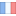
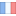

Ardelean George
or Giuco
👩🚀 Welcome to my website!
I like dogs 🐕
📜 Manifesto
I'm currently a Computer Science student at Universitate Babes Bolyai in Cluj Napoca.
This summer I discovered a passion for web development but I'm not certain yet what carrier path I'm going to choose in the future.
Lately I took an interest in the THREE JS library and I'm really eager to start doing some more advanced projects using 3D Modelling.
I'm really eager to become more proficient in the industry and be an active member in the development of future technological advancements.
📊 Projects
You can find my projects as well as my skills in my github account: Giuco-senpai45
🏆 Accomplishments
I'm happy to learn anything right now and I really want to be part of a big project in the near future.
I'm proficient in using English and Romanian
but I
can also speak a bit of German
and French
and Romanian
but I
can also speak a bit of German
and French
You can find a more detailed description in my CV
Per aspera ad astra
👓 Skills
🔧Technical skills
As part of my technical skills I will include below software languages I have worked with these past years with which I am familiar.
- Javascript
- Java
- C
- C++
- Python
- Git
- CSS/HTML (kinda obvious huh? :3)
- Git
🤡 Social skills
I always enjoyed working in a team and I'm usually the type of guy to try and unite everyone. I also like to communicate and I'm usually straight forward if something bothers me.
☎ Contact
You can also check out my LinkedIn profile.